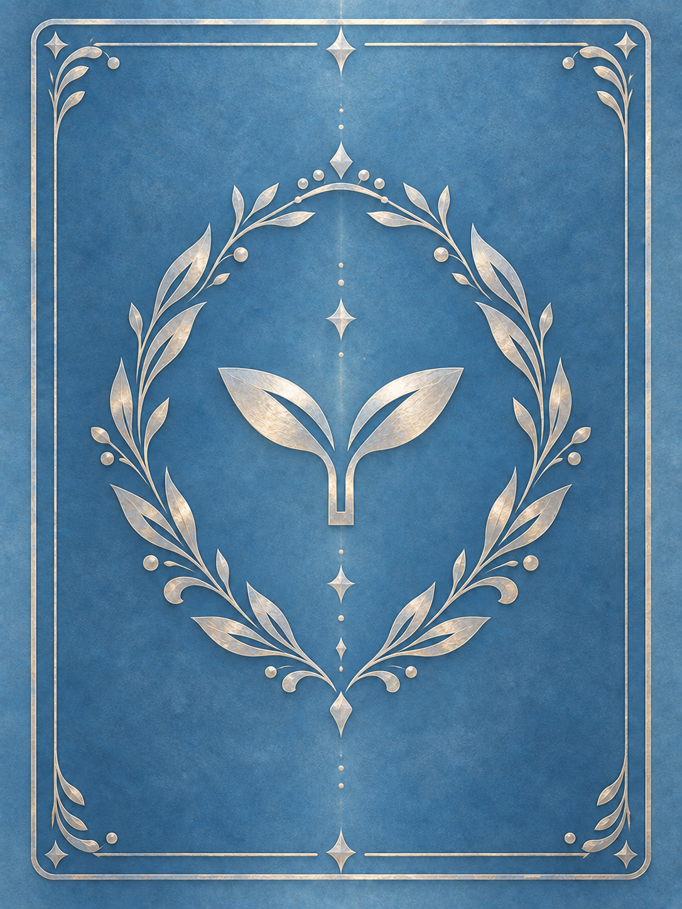

01 / FINISH
仕上げを、見比べる。
全案で針・数字・銀葉・双葉の位置は共通。ベゼルは外側へ拡張しています。
02 / BEFORE & AFTER
同じ針、異なる表情。
左がVERSION 6の濃いB、右が選択中の仕上げ。スマートフォンでは横並びに加え、上の大きな時計で切り替えて確認できます。
03 / MATERIAL STUDY
濃い色は残し、質感を整える。
3案とも銀ベゼルは2倍、表示倍率も共通です。「V6の濃いB＋細い光」は従来の筋目を保持。修正版は筋目を微細にし、白い反射を色味のある金属反射へ変更しました。
04 / METALLIC DIALS
3つの、小さな計器。
V6の濃いBと修正版を拡大比較。針と数字は同じです。
05 / GAME EDITION
6つの値を、独立して。
全表示に同じ値が反映されます。ゲームのセーブとは接続していません。
06 / SOURCE & NEXT
正式カードの青銀から。

保存したVERSION 6全案も引き続き確認できます。銀葉と双葉はV4原画を保持し、青い部分のみ色補正しています。
第一候補：細い光・強調＋濃いメタリック修正版＋銀ベゼル2倍。細い光・標準も比較できます。色・質感の最終判断はiPhone Safariで。
金針は従来の色と輪郭を保護。明るい計器上ではコントラストが低く、実物の金属反射・印刷色・軸機構・寸法は試作検証が必要です。CLOCK EDITIONは別設計、タキメーターと計測機構は今回未設計です。